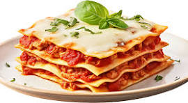

Lsagna

Description:
This classic lasagna recipe is hearty, cheesy, and perfect for feeding a crowd. Layers of pasta, rich meat sauce, and creamy béchamel make it a comforting favorite.
Ingredients:
- 1 pound ground beef
- 1 onion, finely chopped
- 2 cloves garlic, minced
- 1 can (28 ounces) crushed tomatoes
- 1 can (6 ounces) tomato paste
- 2 teaspoons dried oregano
- Salt and pepper to taste
- 12 lasagna noodles, cooked
- 3 cups shredded mozzarella cheese
- 1 cup grated Parmesan cheese
- 2 cups béchamel sauce
Steps:
- In a skillet, brown the ground beef with onion and garlic. Drain excess fat.
- Add crushed tomatoes, tomato paste, oregano, salt, and pepper. Simmer for 20 minutes.
- Preheat the oven to 375°F (190°C).
- In a baking dish, layer cooked lasagna noodles, meat sauce, mozzarella, Parmesan, and béchamel. Repeat.
- Bake for 30-35 minutes or until bubbly and golden.
- Let it rest for 10 minutes before serving. Enjoy your delicious lasagna!